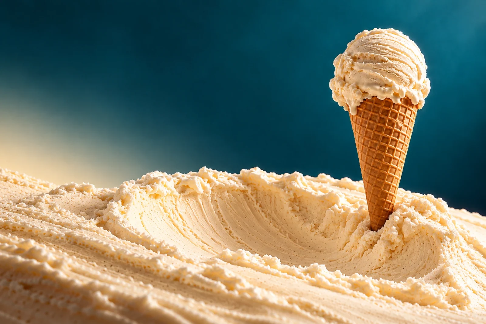
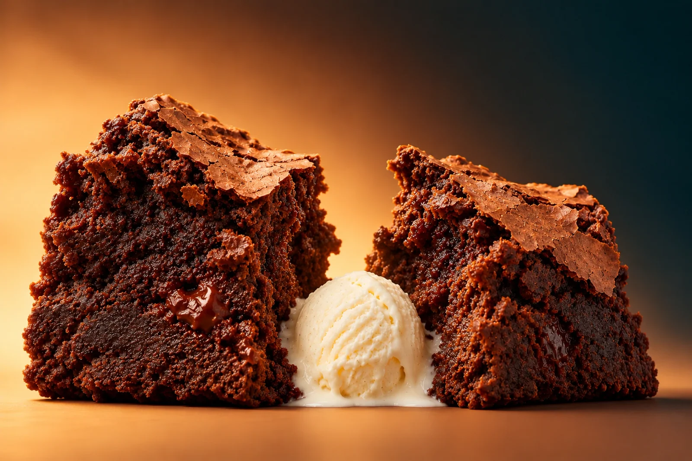
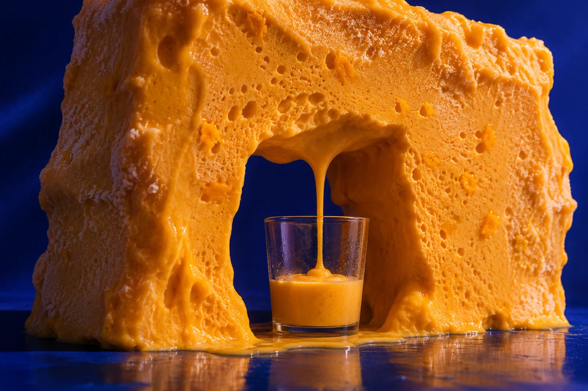
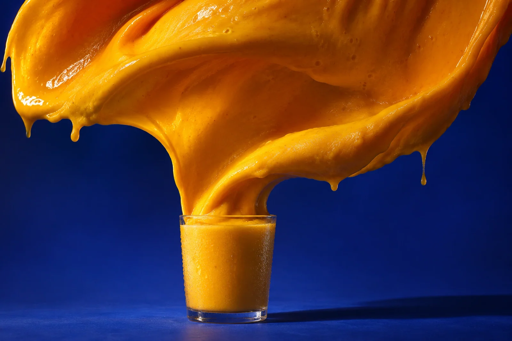
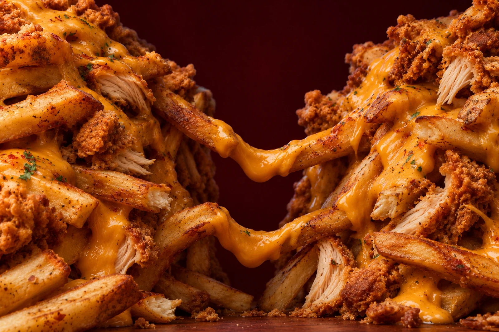

THE BEAUTIFUL VIOLENCE OF CRAVING
Five edible structures at the instant their materials begin to give.

The idea
Appetite becomes a physical force. Ice cream is carved into terrain, two dense brownies press against a melting scoop, mango takes two impossible sculptural forms, and loaded fries split around a molten fault. Each image has a different event and a distinct material character.
Making the world
Frozen cream, baked crumb, aerated mango, glossy shake, fried potato, chicken and molten cheese carry the sequence. These are independent AI-assisted digital food-art studies, not photographs of built sculptures. The 3840-pixel exports were enlarged from smaller sources; the monumental mango spans and food structures are conceptual rather than physically validated.
The series



